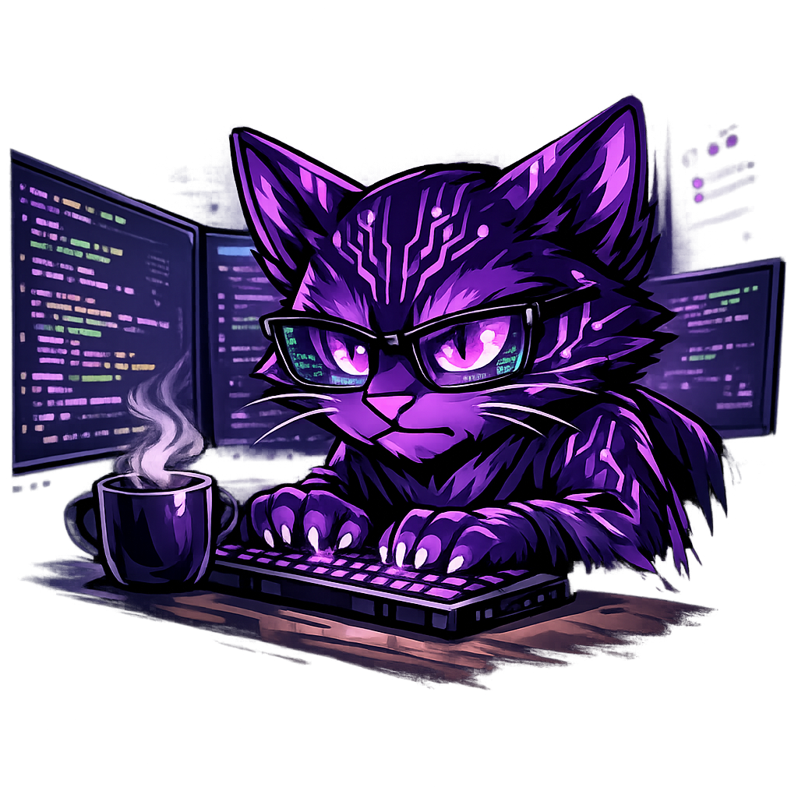

Accessibility Tools
About Nathan

My name is Nathan and I run PurpleTechCat, a small home‑based IT support project in L25. I help people of all ages with everyday tech — children, families and neighbours.
From August 2023 to November 2025, I was used to be Volunteer IT Officer at Deaf Active. I supported my own Digital Hub page on WordPress, helped people learn IT skills and won two awards for my work. When Deaf Active visited schools, I shadowed staff and learned how to work safely around children (including those with SEND).
I also have a clear Enhanced DBS from my past volunteering. I mostly worked with children at Panathlon Challenge, supporting SEND children and deaf children during sports events. I also helped at youth clubs and school visits, so families know I am calm, patient and safe.
I am deaf, neurodiverse and gay, and I use BSL Levels 1–3. PurpleTechCat is for everyone — families, neighbours, older people and LGBTQ+ people of any age.
I love cats and chocolate, which is where the name PurpleTechCat comes from.
Connect on LinkedIn